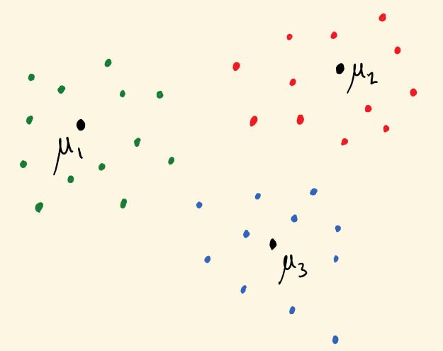
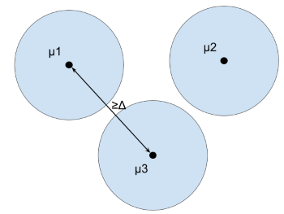
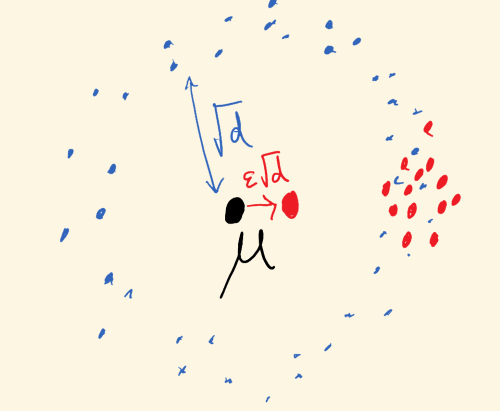

SoS Tutorial, Part II
(loading loading loading – advance slide)
\(\newcommand{\P}{\mathbb{P}}\) \(\newcommand{\R}{\mathbb{R}}\) \(\newcommand{\e}{\varepsilon}\) \(\newcommand{\cD}{\mathcal{D}}\) \(\newcommand{\poly}{\text{poly}}\) \(\newcommand{\cN}{\mathcal{N}}\) \(\newcommand{\tensor}{\otimes}\) \(\newcommand{\E}{\mathop{\mathbb{E}}}\) \(\renewcommand{\hat}{\widehat}\) \(\newcommand{\iprod}[1]{\langle #1 \rangle}\) \(\newcommand{\pE}{\tilde{\mathbb{E}}}\) \(\newcommand{\Paren}[1]{\left ( #1 \right )}\)
SoS and Robust Statistics, Part 2
Sam Hopkins (Cornell University \(\rightarrow\) UC Berkeley)
Agenda:
- Wrap up from yesterday
- Mixture models and clustering
- Which distributions does SoS robustly estimate and cluster?
Recap of Part 1
SoS is really great (Thor’s hammer, Sauron’s ring, etc.)
Offers a method to design efficient algorithms based on simple identifiability proofs.
The “usual” identifiability argument for mean estimation with \(\e\)-corrupted samples under bounded covariance assumptions with \(O(\sqrt \e)\) error is the right kind of simple.
Uses only Cauchy-Schwarz, triangle inequalities, hence has an SoS certificate
The holy trinity: simple identifiability proofs, sum-of-squares polynomials, efficient algorithms
Yesterday we saw:
If \(X = \{x_1,\ldots,x_m\}\) are \(\e\)-corrupted from a distribution \(\cD\) with mean \(\mu\), variance \(1\), whp there are degree \(O(1)\) polynomials \(s_i(w,X',\mu',g), q_j(w,X',\mu',g)\) such that
\(O(\e) - (\mu - \mu')^2 = \sum s_i^2 + \sum q_j p_j\)
where \(p_1=0,\ldots,p_m=0\) enforce
\(w_i^2 = w_i\) and \(\sum w_i = (1-\e)m\)
\(w_i(X_i - X_i')\)
\(\mu' = \frac 1 {(1-\e)m} \sum w_i X_i'\)
\(\sum w_i(X_i - \mu')^2 + g^2 =1\)
This is an SoS identifiability proof
Not going to go through the basic identifiability proof yet again, but just a taste:
To SoS-ify the Cauchy-Schwarz step, use that
\(\Paren{\sum_{i \leq n} y_i^2}\Paren{\sum_{i \leq n} x_i^2} - \Paren{\sum_{i \leq n} x_i y_i}^2 = \sum_{i,j} (x_iy_j - x_j y_i)^2\)
SoS identifiability proof + meta-theorem \(\rightarrow\) efficient algorithm
If \(p_1(\hat{\Theta},W)=0,\ldots,p_m(\hat{\Theta},W)=0\) imply \(\|\Theta - \hat{\Theta}\|^2 \leq \delta\) and this has an SoS proof of degree \(t\), then there is an \((mn)^{O(t)}\) time algorithm to output \(\Theta'\) with \(\|\Theta' - \Theta\|^2 \leq \delta\).
\(\delta - \|\Theta - \hat{\Theta}\|^2 = \sum s_i^2 + \sum q_j p_j\)
Proof of meta-theorem:
Suppose linear operator \(\pE \, : \, \R[\hat{\Theta},W]_{\leq t} \rightarrow \R\) such that
- \(\pE 1 = 1\)
- \(\pE p^2 \geq 0\) for all \(p\) such that \(\deg p^2 \leq t\)
- \(\pE p_i q = 0\) for all \(q, p_i\) such that \(\deg p_i q \leq t\)
Then \(\pE \|\Theta - \hat{\Theta}\|^2 \leq \delta\), expands to \(\|\Theta\|^2 + \pE \|\hat{\Theta}\|^2 - 2 \iprod{\Theta,\pE \hat{\Theta}} \leq \delta\).
Since \(\pE \|\hat{\Theta}\|^2 \geq \|\pE \hat{\Theta}\|^2\), we find \(\|\pE \hat{\Theta} - \Theta\|^2 \leq \delta\).
Have some \(p_1(y),\ldots,p_m(y)\)
Suppose linear operator \(\pE \, : \, \R[y]_{\leq t} \rightarrow \R\) such that
- \(\pE 1 = 1\)
- \(\pE p^2 \geq 0\) for all \(p\) such that \(\deg p^2 \leq t\)
- \(\pE p_i q = 0\) for all \(q, p_i\) such that \(\deg p_i q \leq t\)
Set of such \(\pE\) is feasible set of following SDP:
Variables: “\(\pE y^\alpha\)” for every multi-index \(\alpha\) with \(|\alpha| \leq t\) (assume \(t\) even)
They define an operator: \(\pE p(y) = \pE \sum p_\alpha y^\alpha = \sum p_\alpha \pE y^\alpha\)
Constraints (1) and (3): \(\pE 1 = \pE y^{\emptyset} = 1\) is a linear constraint. So is \(\pE p_i(y) \cdot y^\alpha = 0\).
Constraint (2): \(\pE p^2 \geq 0\) is equivalent to \(p^\top M p \geq 0\) where \(M_{\alpha,\beta} = \pE y^\alpha y^\beta\).
Resulting SDP has “intended solution” \((y^{\tensor t/2})(y^{\tensor t/2})^\top\)
(compare with \(yy^\top\) from basic SDP)
Final comments:
Run through the whole construction for robust mean estimation and will get an SDP with “intended solution”
\(w^{\tensor t} \tensor \mu^{\tensor t} \tensor X^{\tensor t} \tensor g^{\tensor t}\)
where \(w\) is \(0/1\) indicator of a set of \((1-\e)m\) samples with mean \(\mu\), bounded covariance, and \(X,g\) are auxiliary variables.
Mixture Models

Mixture Models
Input: Samples \(X_1,\ldots,X_n \in \R^d\) from mixture of \(\cD_1,\ldots,\cD_k\) with means \(\mu_1,\ldots,\mu_k \in \R^d\)
Goal: cluster \(X_1,\ldots,X_n\) and/or estimate \(\mu_1,\ldots,\mu_k\)
1890s: Pearson invents method of moments to learn mixture of \(k=2\) Gaussians in \(d=1\) dimension
Now: ubiquitous generative model of inhomogeneous data – data from multiple populations
Today, inhomogeneous data is high-dimensional and can have many underlying components
Aim to use \(\poly(d,k)\) samples and time
Information-Theoretic Barrier
Mixture of \(k\) Gaussians in \(d=1\) dimension can be \(2^{-\Omega(k)}\)-close to standard Gaussian [Moitra-Valiant]

Separation Assumption
Input: Samples \(X_1,\ldots,X_n \in \R^d\) from mixture of \(\cD_1,\ldots,\cD_k\) with means \(\mu_1,\ldots,\mu_k \in \R^d\)
Scaling: Assume covariances \(\Sigma_1,\ldots,\Sigma_k \preceq I\)
\(\Delta\)-Separation assumption: \(\|\mu_i - \mu_j\| \geq \Delta\) for some \(\Delta > 0\).

For which \(\Delta > 0\) and which \(\cD_1,\ldots,\cD_k\) can \(\mu_1,\ldots,\mu_k\) be estimated in \(\poly(d,k)\) time, samples?
Mixture Models – Non-SoS and SoS Results
For now: \(\cD_i\) Gaussian, for simplicity, covariances \(\Sigma \preceq I\), uniform mixture.
| \(\Delta\) | Algorithm | Property of Gaussians | Reference |
|---|---|---|---|
| \(10\sqrt{d}\) | greedy | distance to mean | [folklore] |
| \(0.01\sqrt{d}\) | spectral | bdd covariance | [D99] |
| \(d^{1/4}\) | EM (captured by greedy) | pairwise distances | [DS01] |
| \(\min(d,k)^{1/4}\) | PCA+EM/greedy | pairwise distances | [VW02] |
| \(k^{\e}\) | sum of squares | bdd \(1/\e\) moments | [HL18,KSS18,DKS18] |
lower bound: if \(\Delta \leq o(\sqrt{ \log k})\), need \(\gg \poly(d,k)\) samples [RV17]
Theorem 1: If \(\Delta = k^\e\), can recover \(\mu_i\)’s and cluster up to \(1/\poly(k)\) error in time, samples \(d^{O(1)}k^{O(1/\e)}\).
Theorem 2: If \(\Delta = C\sqrt{ \log k}\), can recover \(\mu_i\)’s and cluster up to \(1/\poly(k)\) error in time, samples \(d^{O(1)}k^{O(\log k)}\), for a universal constant \(C\).
Proofs to Algorithms
Recall from yesterday:
Simple identifiability proof \(\rightarrow\) SoS identifiability proof \(\rightarrow\) SDP-based algorithm
Whiteboard time!
Certifiable Moment Boundedness
For which distributions \(\cD\) can SoS robustly estimate the mean?
For which \(\Delta\)-separated \(\cD_1,\ldots\cD_k\) can SoS cluster and learn means?
Various names in literature: certifiable subgaussianity, explicit boundedness
In identifiability proofs, needed \(\E_{X \sim \cD} \iprod{X - \mu, u}^t \leq t^{t/2} \|u\|^t\) for all \(u \in \R^d\).
(Implies no event \(\mathcal{E}\) with probability \(\e\) influences the mean by more than \(\e^{1-1/t}\))
To SoS-ify the identifiability proof, will need
\(C^t t^{t/2} \cdot \|u\|^t - \E_{X \sim \cD} \iprod{X - \mu, u}^t = \sum s_i^2\)
True for \(t\)-wise products (next slide) and rotations thereof
Also true for Poincare distributions (an isoperimetry property) \(\rightarrow\) strongly log-concave distributions [KSS18]
Certifiable moment bounds for product distributions
Let \(X\) on \(\R^d\) be \(t\)-wise independent, assume \(\E X = 0\) and \(\E X_i^t \leq B\).
Assume coordinates \(X_i\) are symmetric about \(0\) (otherwise replace with \(X - X'\) for independent draw \(X'\))
Then \(\E X^\alpha = 0\) for any odd \(\alpha\) with \(|\alpha| \leq t\). E.g \(\E X_1^2 X_{10}^5 = 0\)
\(\E \iprod{X,u}^t = \sum_{|\alpha| = t} u^\alpha \E X^\alpha = \sum_{|\alpha| = t, \alpha \text{ even}} u^\alpha \E X^\alpha\)
Let \(c_\alpha = B - \E X^\alpha \geq 0\).
Then \(B \cdot \|u\|^t - \E \iprod{X,u}^t = \sum_{|\alpha| = t, \alpha \text{ even}} c_\alpha u^\alpha\) is an SoS.
Which distributions have certifiably bounded moments?
Known: Poincare (with dimension-independent constant), hence strongly log-concave
The frontier: log-concave (implied by KLS conjecture via Poincare?)
Moonshot: subgaussian?? (probably too broad)
Open problem: prove a hardness result for some subgaussian distribution
Wrapping up
If you remember only one thing: simple identifiability proofs \(\rightarrow\) computationally efficient algorithms.
SoS offers provable guarantees for broadest known classes of distributions for clustering, robust moment estimation.
And robust regression, robust sparse recovery, \(\ldots\)
Proofs to algorithms recipe also works for dictionary learning, matrix/tensor completion, tensor principal component analysis, and more
Thanks!!
Robust Moment Estimation
Unknown \(\cD\) on \(\R^d\), receive \(x_1,\ldots,x_n \in \R^d\) which are \(\e\)-corrupted.
“Obvious” algorithms for estimating the mean \(\mu\) (outlier removal, etc) have error growing with \(d\). (e.g. \(\|\hat{\mu} - \mu\| \leq O(\e \sqrt d)\))
Ex. \(\cN(0,I)\):

Tukey, 1960: Dimension-independent error but not poly-time
Similar problems (learning halfspaces, PCA with adversarial corruptions), poly time [XCS10, ABL14]
Recent breakthrough: first poly-time, dimension-independent guarantees for robust mean estimation, for distributions with bounded second moments [DKK+16, LRV16]. (e.g. \(\|\hat{\mu} - \mu\| \leq O(\sqrt \e)\))
Higher moments: Existing results limited to covariance estimation for Gaussian/\(4\)-wise independent dist’ns [DKK+17, SCV18]
Kothari-Steinhardt-Steurer (this talk): first poly-time algorithms to estimate higher moments with dimension-independent error, non-Gaussian/\(k\)-wise indep. distributions
Automatic robustification of moment-method algorithms!
Application: robust independent component analysis, via \(4\)th moments
Opening the hood…(back to mixture models)
Main technique: algorithms from simple identifiability proofs
Simplify setting: assume covariances \(\Sigma_i = I\) (“spherical”)
Identifiability: For \(\Delta \geq k^\e\) and typical \(x_1,\ldots,x_n \sim \sum \cN(\mu_i, I)\), if \(v_1,\ldots,v_k\) such that \[ \Pr_{\frac 1k \sum \cN(v_i,I)} (x_1,\ldots,x_n) \approx \Pr_{\frac 1k \sum \cN(\mu_i,I)} (x_1,\ldots,x_n) \] then \(\{v_1,\ldots,v_k\} \approx \{\mu_1,\ldots,\mu_k\}\).
i.e. \(\mu_1,\ldots,\mu_k\) are information-theoretically recoverable
Sum of Squares method: turns a sufficiently-simple proof of identifiability into a polynomial-time semidefinite programming algorithm to find \(\mu_1,\ldots,\mu_k\)
Now well-established, captures algorithms for matrix completion, sparse vector problems, dictionary learning, component analysis problems, tensor problems, and more
Algorithm outline
If \(\e > 0\), separation is \(\Delta > k^{\e}\) and have \(n \geq k^{O(1)} d^{O(1/\e)}\) samples.
Input: \(x_1,\ldots,x_n \in \R^d\)
- Solve an \(n^{O(1/\e)}\)-size semidefinite program (from Sum of Squares hierarchy) designed to find a subset \(S\) of \(n/k\) samples with bounded \(O(1/\e)\)-th empirical moments
\[ \forall \|v\|=1, \, \frac 1 {|S|} \sum_{i \in S} \langle x_i- \mu(S), v \rangle^{10/\e} \leq O_\e(1) \]
Algorithm outline
If \(\e > 0\), separation is \(\Delta > k^{\e}\) and have \(n \geq k^{O(1)} d^{O(1/\e)}\) samples.
Input: \(x_1,\ldots,x_n \in \R^d\)
Solve an \(n^{O(1/\e)}\)-size semidefinite program (from Sum of Squares hierarchy) designed to find a subset \(S\) of \(n/k\) samples with bounded \(O(1/\e)\)-th empirical moments
SDP solution is (nearly) integral (trivial rounding finds clusters and means)
Analysis outline:
Dual of the SDP \(=\) a restricted proof system (“the degree \(O(1/\e)\) SoS proof system”), captures inequalities like Cauchy-Schwarz, Holder’s, triangle inequality
Identifiability proof simple enough to be phrased in this proof system \(\rightarrow\) near-integrality of clustering SDP
Any subset of \(n/k\) samples w. bounded \(1/\e\) moments is nearly a true cluster (whose mean is nearly a \(\mu_i\)). Proof using only Holder and triangle ineq’s:
Recall \(\Delta = k^\epsilon\)
Since true clusters are subgaussian – \((10/\e)\)-th moment is at most \(O_\e(1)\) in every direction.

red = putative cluster \(S\)
If a \(1/k^2\)-fraction of \(S\) is in cluster \(2\)
then \(10/\e\)-th empirical moment \(\frac 1 {|S|} \sum_{i \in S} \langle x_i - \mu(S), \mu_2 - \mu(S) \rangle^{10/\e}\) of \(S\) is at least \[ \frac 1 {k^2} \cdot [\Omega(\Delta)]^{10/\e} \geq k^8 >> O_\e(1) \]
Recap
New algorithm design technique, using Sum of Squares SDPs, for moment estimation when not all data comes from \(\cD\).
First improvement in separation for Gaussian mixtures models in 15 years.
Automatic robustification of moment-method algorithms.
Thanks! Questions?
High-Dimensional Estimation Tasks
Parameters: \(\theta \in \R^K\)
Samples: \(X_1,\ldots,X_n \sim \P(X \, | \, \theta)\) with \(X_i \in \R^d\)
Goal: estimate \(\theta\) by \(\widehat{\theta}(X_1,\ldots,X_n)\) via computationally-efficient algorithm.
Challenge: traditional statistical approaches (max-likelihood, etc.) often exponential in (at least) one of \(d,K,n\).
Example (known in ancient Greece, India, etc.): estimate \(\mu \in \R^d\) from \(X_1,\ldots,X_n \sim \cD\), mean of \(\cD\) is \(\mu\) (use empirical mean)
Example (Pearson, 1890s): estimate \(\mu_1,\ldots,\mu_k \in \R^d\) from \(X_1,\ldots,X_n \sim \frac 1k \sum_{i \in [k]} \cD_i\), mean of \(\cD_i\) is \(\mu_i\).
(clustering, moment methods, dimension reduction, …)
Robust High-Dimensional Estimation Tasks
Parameters: \(\theta \in \R^K\)
Samples: \(X_1,\ldots,X_n \sim \P(X \, | \, \theta)\) with \(X_i \in \R^d\)
Adversary: replace \(X_1,\ldots,X_n\) with \(Y_1,\ldots,Y_n\), with \(Y_i = X_i\) for at least \((1-\e)n\) samples
Goal: estimate \(\theta\) by \(\widehat{\theta}(Y_1,\ldots,Y_n)\) via computationally-efficient algorithm.
Challenge: even for very simple estimation tasks like mean estimation, the obvious estimators/algorithms incur dimension-dependent error.
Example: estimate mean of \(\cN(\mu, I)\) from \(\e\)-corrputed samples
after removing “obvious outliers”, empirical mean still poor: adversary can achieve \(\|\widehat{\mu} - \mu\| \approx \e \sqrt d\)
First poly time, dimension-independent guarantees very recent [DKK+16, LRV16].
Example (Pearson, 1890s): estimate \(\mu_1,\ldots,\mu_k \in \R^d\) from \(X_1,\ldots,X_n \sim \frac 1k \sum_{i \in [k]} \cD_i\), mean of \(\cD_i\) is \(\mu_i\).
(clustering, moment methods, dimension reduction, …)
complex estimation tasks only get harder
Main Contribution
A new algorithm-design technique for high-dimensional estimation.
New algorithms for:
- clustering, learning mixture models
- robust mean estimation
- robust higher-moment estimation
- robust independent component analysis
- list-decodable learning
Estimate empirical mean/moments of a “good” subset of samples.
Robust estimation: good subset = uncorrupted samples
Clustering/mixture models: good subset = a single cluster
Uses the sum of squares method (SoS) to turn simple identifiability proofs into efficient semidefinite-programming-based algorithms.
Agenda
- Overview of results
- Zoom in on simple case – well-separated mixtures of Gaussians
Mixture models: Can cluster and estimate means of a mixture of \(k\) unknown \(d\)-dimensional distributions \(\cD_i\) with \(\poly(k,d)\) time/samples, so long as
Separation: \(\|\mu_i - \mu_j\| \geq k^{\e}\)
Bounded moments: \(\cD_i\) has \(O(1/\e)\) subgaussian moments, and this has a simple (SoS) proofex: strongly \(\log\)-concave distributions, rotations product distributions with \(O(1/\e)\) subgaussian moments
First tight guarantees for distributions with bounded \(O(1/\e)\) moments; approaches information-theoretic optimality for Gaussian mixtures.
Moment tensor: \(r\)-th moment \(M_r\) of a distribution \(\cD\) has entries \((M_r)_{i_1,\ldots,i_r} = \E_{X \sim \cD} X_{i_1} \cdot \ldots \cdot X_{i_r}\).
(\(r=2\) is the covariance matrix)
Robust moment estimation: Given an \(\e\)-corrupted set of \(d^{O(t)}\) samples from unknown \(d\)-dimensional distribution \(\cD\), can estimate \(r\)-th moment tensor \(M_r\) of \(\cD\) in injective tensor norm (high-order analogue of spectral norm)
\[\max_{u \in \R^d} \langle \widehat{M_r} - M_r, u^{\otimes r} \rangle \leq \e^{1-\tfrac r t} \cdot O(t^{r/2})\]
if \(\cD\) has bounded \(t\)-th moments and this has a simple (SoS) proof.
First dimension-independent guarantees for robust higher-moment estimation beyond Gaussians
Application: Robust Independent Component Analysis
Parameters: \(a_1,\ldots,a_d \in \R^d\). Let \(A = (a_1,\ldots, a_d)\) nonsingular
Samples: \(X = AY\) with \(Y \sim \cD\) for unknown, non-Gaussian \(\cD\)Goal: estimate \(a_1,\ldots,a_n\)
Classic alg (orthogonal case): estimate \(\E X^{\otimes 4} \approx \sum_{i \in [n]} a_i^{\otimes 4}\) from samples, apply tensor decomposition
Robust \(4\)-th moment estimation automatically robust-ifies this algorithm
Mixture Models
Parameters: cluster centers \(\mu_1,\ldots,\mu_k \in \R^d\)
Samples: \(X_1,\ldots,X_n \sim \frac 1k \sum_{i \leq k} \cD_i\) where \(\E_{X \sim \cD_i} = \mu_i\).